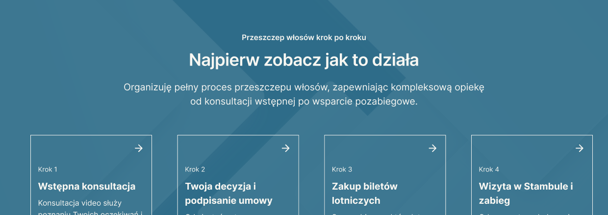
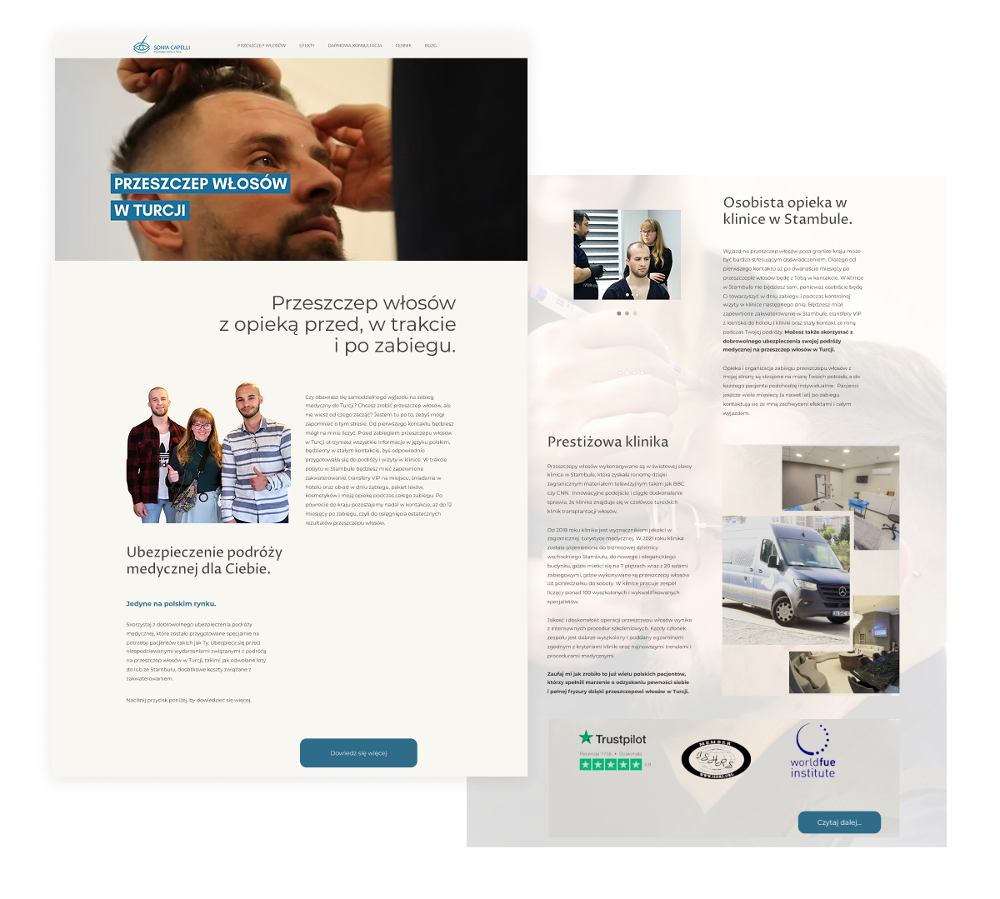
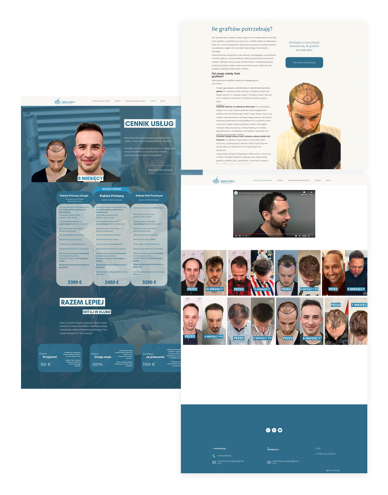
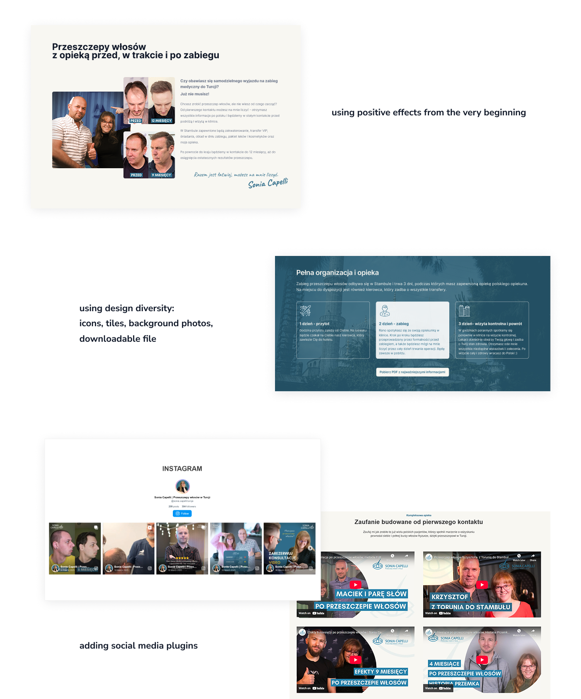
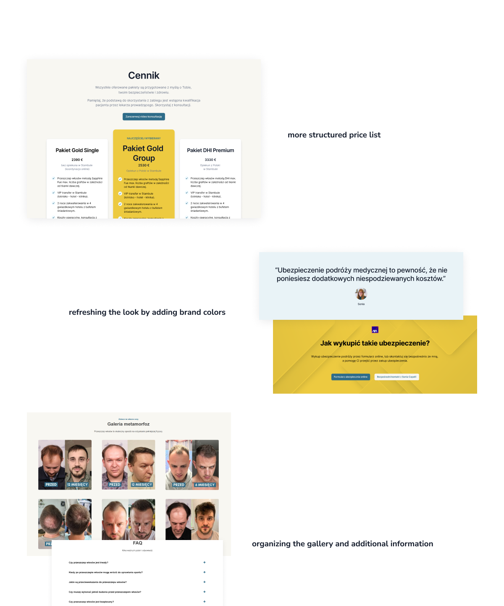

Odważna transformacja dla ekspertów od odbudowy włosów
Dotarcie do osób zmagających się z problemem utraty włosów jest wyzwaniem, ponieważ wymaga połączenia empatii, budowania zaufania oraz przekonującej komunikacji, która pomoże przełamać związane z tym obawy, wstyd i wahanie przed podjęciem działania.

General overview
The client wanted a fresh yet intuitive redesign for their hair transplant services website, maintaining brand colors while introducing a more engaging and modern layout. The challenge was to balance creativity with functionality, ensuring the design remained visually striking yet easy to navigate. Additionally, the site needed to be feasible for development within the limitations of the **one.com** CMS.
Main information
Role: Web designer / UX-UI
Duration: 2 months (year of implementation - 2024)
Main goals: Refreshing the architecture and layout / SEO improvement
Process: Site review - Preparing architecture in Relume - Iterations in Figma as agreed with the client - Project implementation in CMS
Main limitations
CMS responsiveness limitations
No accordion-type elements in the CMS
Solution
Tightening the layout
Tests on different devices and with different breakpoints
Writing your own code for accordion
Improved site architecture - Relume

Previous design (example)


After redesign (example)


Update 2025
The site was moved to WordPress in March 2025 to facilitate SEO activities and improve responsiveness. The site is available at:
Sonia Capelli website
My contribution: Verification and improvement of visual aspects of components and layout after developer, tests of basic technical requirements of the website.
Takeaways
Not everyone likes limitations in design, but that's how the world is - limited and imperfect.
The trick is to use the system's (CMS) capabilities to the max, blend with UX and UI knowledge to achieve the best effect.
Searching and testing - that was the recipe for ending this project with success, i.e. customer satisfaction, improving statistics:
1. increased conversion
2. faster page loading
3. more user-friendly UI